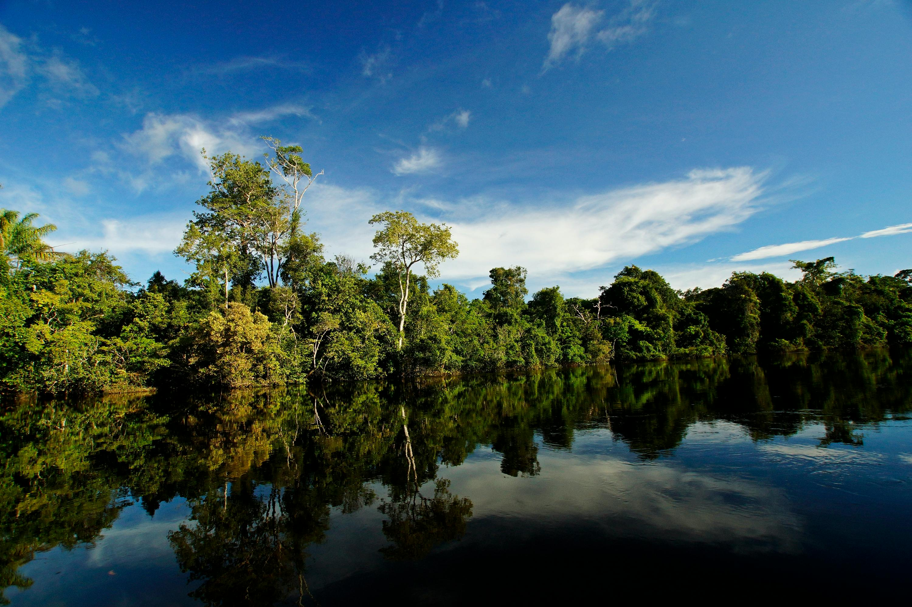
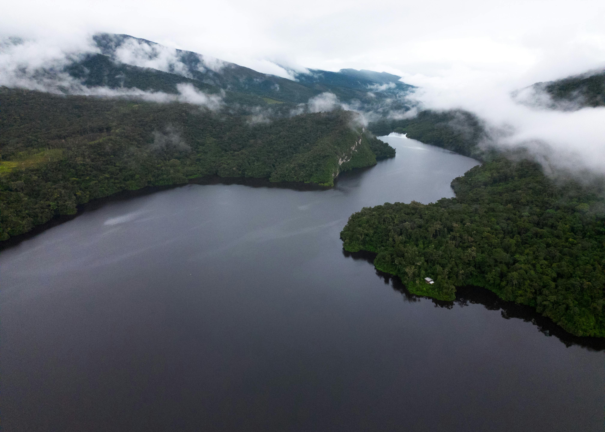

Foco
Nacional
O Caso Brasil
O Brasil possui a maior biodiversidade do mundo, mas nossos biomas enfrentam ameaças sem precedentes que impactam todo o clima global.

Imensidão Verde
A maior floresta tropical do planeta.

Rios Voadores
A umidade que alimenta as chuvas do continente.

Ameaça Constante
O avanço do desmatamento coloca o bioma em risco.